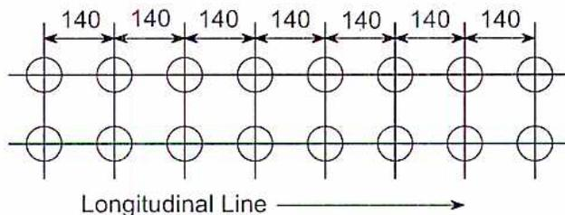
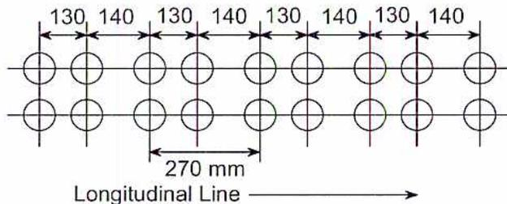
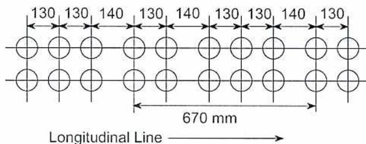
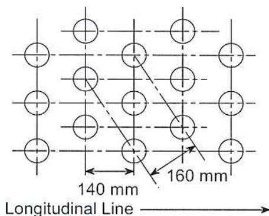
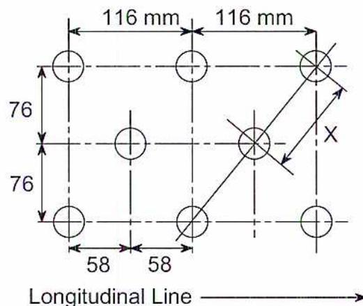
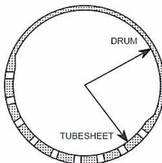
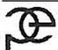
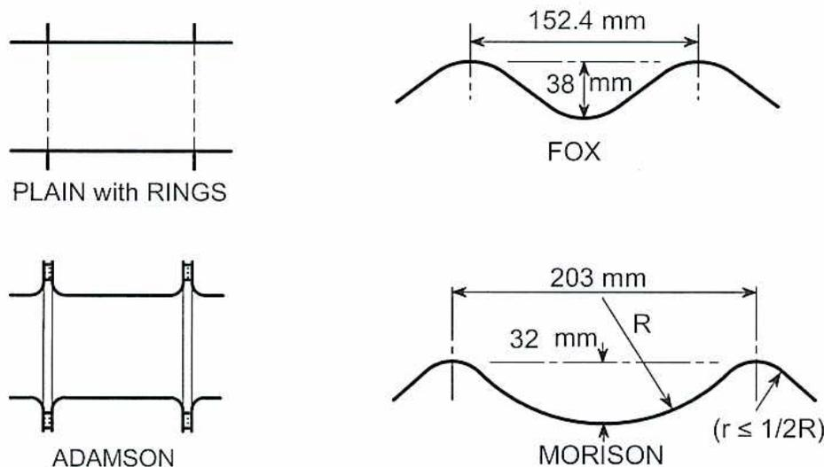

When you complete this learning material, you will be able to:
Apply the appropriate formulae from ASME Sections I, IV, and VIII to calculations involving pressure vessel stayed surfaces, ligament efficiency, safety and safety relief valves, and furnaces.
You will specifically be able to complete the following tasks:
This module uses ASME Sections I, IV, and VIII-1. Each of these sections contains rules for braced and stayed surfaces, safety valves, and furnaces or cylinders under external loads.
The objective of this module is not to produce a design engineer but a Power Engineer with knowledge of the basic rationale of the Codes.
In cylindrical vessel shells the stress set up by internal pressure longitudinally is equal to twice the stress set up circumferentially.
$$ \text{Longitudinal Stress} = \frac{\text{vessel diameter} \times \text{internal pressure}}{\text{vessel wall thickness} \times 2} $$
$$ \text{Circumferential Stress} = \frac{\text{vessel end area} \times \text{internal pressure}}{\text{vessel circumference} \times \text{wall thickness}} $$
Determine the stress longitudinally and circumferentially on the shell of a vessel 4.5 m diameter, 35 mm thick and an internal pressure of 1350 kPa.
$$ \begin{aligned}\text{Longitudinal Stress} &= \frac{\text{vessel diameter} \times \text{internal pressure}}{\text{vessel wall thickness} \times 2} \\ &= \frac{4500 \times 1.350}{2 \times 35} \\ &= 86.79 \text{ MPa}\end{aligned} $$
$$ \begin{aligned}\text{Circumferential Stress} &= \frac{\text{vessel end area} \times \text{internal pressure}}{\text{vessel circumference} \times \text{wall thickness}} \\ &= \frac{\frac{\pi}{4} \times 4500^2 \times 1.35}{\pi \times 4500 \times 35} \\ &= \frac{4500 \times 1.35}{4 \times 35} \\ &= 43.39 \text{ MPa}\end{aligned} $$
Note: The longitudinal pressure exerts a stress on the metal circumferentially, and the radial pressure exerts a stress on the metal longitudinally.
The strength of a vessel shell depends, therefore, on the diameter and thickness and is independent of the length .
The candidate should consult the latest ASME Codes: Section I; Section II, Part D; Section IV; and Section VIII, Division 1, while studying this module.
Calculate the required thickness and design pressure for braced and stayed surfaces in pressure vessels and the minimum required cross-sectional area of a stay.
Section I: The rules for stayed surfaces and staybolts can be found in Paragraph PG-46 to Paragraph PG-49, Paragraph PW-19 and Paragraph PFT-22 to Paragraph PFT-32.
Section IV: The rules for stayed surfaces and staybolts can be found in Paragraph HG-340 and Paragraph HW-710 to HW-713.
Section VIII-1: The rules for stayed surfaces and staybolts can be found in Paragraph UG-47 to Paragraph UG-50 and Paragraph UW-19.
Stays are used in pressure vessels to carry part or all of the pressure loading when it is desirable or possible to reduce the span and/or the thickness of a tube sheet or other pressure component. Opposite surfaces are tied together by staybolts, tubes, or baffles that carry the pressure loading in tension. Because bending moments, bending strength, and the tensile strength of the stays now resist the pressure loading, the required thickness of stayed surfaces may be less than that of surfaces which are not stayed.
The equation for flat-stayed surfaces is an adaptation of the flat head equation, with the diameter replaced by the distance stays. In this case, the C factor represents the degree of restraint to rotation that the stay attachment provides.
The design pressure and thickness for stayed plates are calculated by the following formulae:
$$ P = \frac{t^2 SC}{p^2} \quad (1.1) $$
$$ t = p \sqrt{\frac{P}{SC}} \quad (1.2) $$
\( t \) = minimum thickness of plate (mm)
\( p \) = maximum pitch measured between straight lines passing through the centres of the staybolts in different rows. The lines may be horizontal and vertical, or radial and circumferential (mm).
\( P \) = maximum allowable working pressure or internal design pressure (kPa).
\( S \) = maximum allowable stress (MPa)—given in Table IA of Section II, Part D, or in Tables HF-300.1 and HF-300.2 in Section IV.
\( C \) = a constant—the value depends on details of the staybolt end design as follows:
Paragraph PG-46.2 states that the minimum thickness of plates to which stays may be applied, in other than cylindrical or spherical outer shell plates, is 8 mm except for welded construction covered by PW-19.
Calculate the maximum allowable working pressure on stayed flat plates 12.5 mm thick, with staybolts attached by fusion welding and pitched 154 mm horizontally and vertically. The plate material is SA-516-55. The average temperature is 200 °C
Use equation 1.1, see Section I, PG-46.1
$$ P = \frac{t^2 S C}{p^2} $$
\( P \) = maximum allowable working pressure (MPa)
\( t \) = 12.5 mm
\( p \) = 154 mm
\( S \) = 108.2 MPa
\( C \) = 2.2 for welded stays or stays screwed through plates over 11 mm in thickness with ends riveted over.
$$ P = \frac{t^2 S C}{p^2} $$
$$ P = \frac{12.5^2 \times 108.2 \times 2.2}{154^2} $$
$$ P = \frac{37193.75}{23716} $$
$$ P = 1.568 \text{ MPa} $$
$$ = 1568 \text{ kPa} $$
Calculate the minimum thickness for stayed flat plates, with staybolts screwed through the plates and pitched 185 mm horizontally and vertically. The plate material is SA-204-A, maximum allowable working pressure 6205 kPa and operating temperature of 300° C.
Section I PG-46.1
$$ t = p \sqrt{\frac{P}{S C}} $$
where
\( P \) = 6.205 MPa
\( S \) = 128.2 MPa
\( p \) = 185 mm
\( C \) = 2.2 (welded stays or stays screwed through plates over 11 mm in thickness with ends riveted over - assume that the plate will be greater than 11 mm thick.)
$$ \begin{aligned} t &= p \sqrt{\frac{P}{SC}} \\ t &= 185 \sqrt{\frac{6.205}{128.2 \times 2.2}} \\ t &= 185 \times \sqrt{0.022} \\ t &= 185 \times 0.148 \\ t &= 27.44 \text{ mm} \end{aligned} $$
The minimum required thickness of 27.44 mm is greater than 11 mm and \( C = 2.2 \) is the correct factor to use.
The requirements are the same for Section I, Section IV and Section VIII-1, only Section I references will be listed.
Paragraph PG-47 states specific requirements for staybolts or stays. A solid stay of 203 mm or less in length shall be drilled with telltale holes at least 4.8 mm diameter to a depth of at least 13 mm beyond the inside of the plate. Hollow stays may also be used. This type of stay can be found in the waterlegs of loco-type boilers. Corrosion is likely in this area, and if a stay corrodes then a 'telltale' leak can be seen. Telltale holes are not required if the staybolt is attached by fusion welding (PW-19.8).
Paragraph PFT-26 states that the area supported by a stay is based on the full pitch dimensions with the cross-sectional area of the stay subtracted. The load carried by that stay is the product of the area supported by the stay times the internal design pressure or MAWP (maximum allowable working pressure). Therefore :
$$ \begin{aligned} \text{Stay load} &= \text{pressure } (P) \times (\text{pitch area } (p^2) - \text{cross-sectional area of stay } (a)) \\ &= P \times (p^2 - a) \end{aligned} \tag{1.3} $$
Paragraph PG-49 points at PFT-26 for computing the load on a staybolt. This load is then divided by the maximum allowable stress value from Table 1A of Section II, Part D. The result is multiplied by 10%. Therefore:
$$ \begin{aligned} \text{Minimum area of stay } (a) &= 1.10 \times (\text{stay load} / \text{maximum allowable stress } (S)) \\ &= 1.10 \times (\text{stay load} / S) \end{aligned} \tag{1.4} $$
Welded stays 30 mm diameter will be used to support a flat plate 16 mm thick. The pressure is 1350 kPa. The stays are spaced 200 mm horizontally and vertically. The steel used for the stays and plate is SA-192 at a maximum temperature of 300° C. Does the stay diameter meet the Code requirements?
Stay diameter of 30 mm. \( (a) = 0.7854 \times 0.030^2 = 0.707 \times 10^{-3} \text{ m}^2 \)
\( P = 1350 \text{ kPa} \)
\( p = 200 \text{ mm} = 0.2 \text{ m} \)
\( S = 91.7 \text{ MPa} = 91700 \text{ kPa} \)
Use equation 1.3 to determine the stay load.
$$ \begin{aligned}\text{Stay Load} &= P \times (p^2 - a) \\ &= 1350 \times (0.2^2 - 0.707 \times 10^{-3}) \\ &= 53.046\end{aligned} $$
Use equation 1.4 to determine the minimum required area of stay.
$$ \begin{aligned}\text{Minimum required area of stay} &= 1.1 \times \text{Stay load}/S \\ &= 1.1 \times 53.045/97100 \\ &= 0.6 \times 10^{-3} \text{ m}^2\end{aligned} $$
Use the equation below to determine the minimum diameter of the stay.
$$ \begin{aligned}\text{Minimum diameter of stay} &= \sqrt{0.6 \times 10^{-3} / 0.7854} \\ &= \sqrt{0.764 \times 10^{-3}} \\ &= \mathbf{0.0276 \text{ m or } 27.6 \text{ mm}} \quad (\text{Ans.})\end{aligned} $$
The stated diameter of the stay is 30 mm; this is larger than the minimum required diameter of 27.7 mm; therefore, the stay diameter meets the Code requirements.
Section IV, Paragraph HG-346 states that the firetubes in a firetube boiler may be used as stays. The required thickness, maximum pitch and design pressure for tubesheets with firetubes used as stays may be calculated by the following formulae:
$$ \begin{aligned}t &= \sqrt{\left(\frac{P}{CS}\right) + \left(p^2 - \frac{\pi D^2}{4}\right)} \\ p &= \sqrt{\left(\frac{CS t^2}{P}\right) + \left(\frac{\pi D^2}{4}\right)} \\ P &= \frac{CS t^2}{p^2 - \left(\frac{\pi D^2}{4}\right)}\end{aligned} $$
\( t \) = the required plate thickness mm.
\( p \) = the maximum pitch measured between the centers of tubes in different rows, mm.
\( C = 2.7 \) for firetubes welded to plates not over 11 mm thick
\( C = 2.8 \) for firetubes welded to plates over 11 mm thick
\( S \) = the maximum allowable stress values given in Section IV, Tables HF-300.1 and HF-300.2 kPa
\( P \) = the design pressure, kPa
\( D \) = the outside diameter of the tubes, mm.
The pitch of firetubes used as stays shall not exceed 15 times the diameter of the tubes. Firetubes welded to tubesheets and used as stays must meet the requirements of HW-713.
Calculate the ligament efficiency method for two or more openings in the pressure boundary of a pressure vessel.
The tubesheet of a firetube boiler is usually a flat plate. The tubesheet of a watertube boiler is part of the boiler drum. Single openings in circular vessels have been covered in Module 1. Multiple openings, such as to be found in a tubesheet, present a different case and are covered by ligament rules to be found in Section I Paragraph PG-52, Section IV Paragraph HG-350 and Section VIII Paragraph UG-53. The ligament rules only consider the material between the holes and do not consider the tube material wall thickness. The value of the ligament efficiency found by these rules is used in the determination of the minimum required thickness and/or the maximum allowable working pressure for cylindrical components under internal pressure found in Paragraph PG-27 and Paragraph UG-27
A ligament is the area of metal between the holes in a tubesheet. The three types of ligaments are:
Longitudinal: located between the front and lengthwise holes along the drum.
Circumferential: located between the holes and encircle the drum.
Diagonal: a special case because they are located between the holes and are offset at an angle to each other.
The rules of ligaments are applicable to groups of openings in cylindrical-pressure parts that form a definite pattern. These rules also apply to openings not spaced to exceed two diameters centre to centre.
The following symbols are used in the formulae for calculating ligament efficiency:
\( P \) = longitudinal pitch of adjacent openings (mm)
\( p' \) = diagonal pitch of adjacent openings (mm)
\( p_1 \) = pitch between corresponding openings in a series of symmetrical groups of openings (mm)
\( d \) = diameter of openings (mm)
\( n \) = number of openings in length \( p_l \)
\( E \) = ligament efficiency
Use the formula:
$$ E = \frac{p - d}{p} \quad (2.1) $$
when the pitch of the tubes on every row is equal (Fig. 1).
Use the formula:
$$ E = \frac{p_l - nd}{p_l} \quad (2.2) $$
when the pitch of the tubes on any one row is unequal (Figs. 2 and 3).
For tube holes drilled along a diagonal, as shown in Fig. 4, use the diagram in Fig. PG-52-1 to obtain the ligament efficiency. (Fig. UG-53.5, Section VIII-1)
Note: For holes along a diagonal, Section IV, paragraph HG-350.4 provides the following formula:
$$ E = \frac{p' - d}{p' F} \quad (2.3) $$
where \( F \) is obtained from the chart in Fig. HG-321.
This method gives a higher efficiency than that obtained in Section I or Section VIII-1.

The diagram shows two horizontal rows of circular tube holes. Above the top row, seven double-headed arrows indicate the pitch between holes, each labeled '140'. A horizontal arrow below the bottom row points to the right and is labeled 'Longitudinal Line'.
Figure 1
Example of tube spacing with hole pitch equal in every row

The diagram shows two horizontal rows of circular tube holes. Above the top row, eight double-headed arrows indicate the pitch between holes, alternating between '130' and '140'. Below the bottom row, a horizontal arrow points to the right and is labeled 'Longitudinal Line'. A dimension line with arrows at both ends is positioned below the holes, labeled '270 mm'.
Figure 2
Example of tube spacing with hole pitch unequal in every second row

Figure 3
Example of tube spacing with hole pitch varying in every second and third row

Figure 4
Example of tube spacing with tube holes on diagonal lines
Using the rule in Section I, determine the minimum thickness of a 920 mm I.D. (internal diameter) cylindrical drum that has a series of openings in the pattern shown in Fig. 4 above and in Fig. 5 below. The openings are 63.5 mm diameter on a staggered pattern of three longitudinal rows on 76 mm circumferential spacing and 116 mm longitudinal spacing. The maximum allowable working pressure is 4100 kPa at a temperature of 250° C. Drum material is SA-516-55 and the tube material is SA-209-T1. The openings are not located in or near any butt-welded joint.

Figure 5
Solution - Thickness of a drum tubesheet
$$ \begin{aligned} \text{Diagonal pitch } X &= \sqrt{58^2 + 76^2} \\ &= \sqrt{3364 + 5776} \\ &= \sqrt{9140} \\ &= 95.6 \text{ mm} \end{aligned} $$
Hole diameter (d) = 63.5 mm
Longitudinal pitch (p) = 116 mm
Use equation 2.1
$$ \begin{aligned} E &= \frac{p - d}{p} \\ &= \frac{116 - 63.5}{116} \\ &= 0.4526 \end{aligned} $$
$$ \begin{aligned} \frac{p'}{p} &= \frac{95.6}{116} \\ &= 0.824 \end{aligned} $$
The point corresponding to these values on the diagram in Fig. PG-52.1, read from the y-axis, is 38%. As the point falls below the line of equal efficiency for the diagonal and longitudinal ligaments, the diagonal ligament is the weaker.
Section I, paragraph PG-27.2.2. (2001)
$$ t = \frac{PR}{SE - (1 - y)P} + C \quad (2.4) $$
\( P = 4100 \text{ kPa or } 4.1 \text{ MPa} \)
\( R = 460 \text{ mm} \)
\( S = 108.2 \text{ MPa at } 250^\circ \text{ C for SA-516-55} \)
\( E = 0.38 \) as determined above
\( C = 0 \)
\( y = 0.4 \) for ferritic steel below \( 482^\circ \text{ C} \)
$$ \begin{aligned} t &= \frac{PR}{SE - (1 - y)P} + C \\ &= \frac{4.1 \times 460}{108.2 \times 0.38 - (1 - 0.4) \times 4.1} \\ &= \frac{1886}{41.116 - 2.46} \\ &= \frac{1886}{38.656} \\ &= 48.789 \text{ mm (Ans.)} \end{aligned} $$
The minimum thickness of the drum shell would be 48.789 mm without any allowance for manufacture or corrosion.
Note: The minimum thickness of this drum, plain, without being drilled for tubes would be 17.836 mm. Therefore, the drum could be manufactured from two half shells; the tube sheet half being 48.789 mm thick, and the drum half being 17.836 mm thick as shown in Fig. 6. Each half would meet the conditions of rule PG-27.2.2.

Figure 6
Example: Thickness of drum tubesheet
Drum manufactured from two half shells
Calculate the required size and capacity of safety valves and safety relief valves.
The most important and also the most critical valve on a boiler is the safety valve. Its only purpose is to protect the boiler by automatically limiting the internal boiler pressure to a point below its Maximum Allowable Working Pressure. To accomplish this, one or more safety valves must be installed. When the valves open, they must be capable of releasing all of the steam that the boiler is capable of generating at maximum firing rates without exceeding the specified maximum allowable pressure rise. By definition:
The rules for safety valves are found in Section I, paragraph PG-67.
Paragraph PG-67.1 states that each boiler shall have at least one safety valve and if it has more than 47 m 2 of bare tube heating surface, it shall have two or more
Paragraph PG-70 states that the safety valve manufacturer determines the maximum design capacity of the safety valve and the boiler manufacturer determines the number of safety valves required by Paragraph PG-67.1.
Paragraph PG-67.2.2 states that for a waste heat boiler the boiler manufacturer determines the minimum required relieving capacity based on the heat produced by the auxiliary firing or the waste heat recovery whichever is greater. This also applies to boilers that are designed for dual fuel firing.
Section I. Paragraph PG-69 contains the rules and capacity tests that must be met by a safety valve manufacturer to obtain the ASME Code Symbol.
Section I, Appendix A, paragraphs A-12 to A-17 show examples illustrating the method of checking safety valve capacity by measuring the maximum amount of fuel that can be burned per hour.
Using the formula

$$ W = \frac{C \times H \times 0.75}{2558} \quad (3.1) $$
\( W \) = mass of steam generated (kg/hr)
\( C \) = total mass or volume of fuel burned/hr (kg or m 3 )
\( H \) = heat of combustion of fuel (kJ/kg) from A-17
The sum of the safety valve capacities marked on the valves shall be equal to or greater than \( W \) .
A boiler at the time of maximum firing uses 730 m 3 of natural gas per hour. The boiler pressure is 1550 kPa gauge. What is the mass of steam generated?
From A-17, natural gas has an \( H \) value of 35 700 kJ/m 3 .
$$ \begin{aligned} W &= \frac{C \times H \times 0.75}{2558} \\ &= \frac{730 \times 35\,700 \times 0.75}{2558} \\ &= 7641 \text{ kg of steam per hour (Ans.)} \end{aligned} $$
Paragraph A-17 lists some specific heating values for various types of fuels. The heating value of the fuel must be known to solve equations determining the mass of steam that can be generated in a boiler.
Section I. Appendix A. A-44 states that the minimum safety valve relieving capacity may be estimated on the basis of the pounds of steam generated per hour per square foot of boiler heating surface and waterwall heating surface, as given in Table A-44. [At the time of writing, the Table A-44 has not been converted to SI Units]
Section I. Appendix A-46 lists three methods that can be used to check the safety valve capacity if the capacity cannot be determined.
Calculate required wall thicknesses of plain circular furnaces, circular flues, and corrugated furnaces.
The strength of a plain furnace depends on the length, the diameter, and the square of the thickness. The strength of a corrugated furnace depends on the diameter and thickness.
Corrugated furnaces have the following advantages over plain furnaces:
Examples of the form of furnace tubes in use are shown below in Fig. 7 with common dimensions.

The diagram illustrates four common circular furnace tube designs. The first, labeled 'PLAIN with RINGS', shows a straight tube with two vertical rings. The second, labeled 'FOX', shows a corrugated tube with a wavelength of 152.4 mm and a depth of 38 mm. The third, labeled 'ADAMSON', shows a tube with four longitudinal ribs. The fourth, labeled 'MORISON', shows a corrugated tube with a wavelength of 203 mm, a depth of 32 mm, a radius of curvature R, and a constraint \( (r \leq 1/2R) \) for the inner radius.
Figure 7
Circular Furnace Designs
Manufacturers use different methods to produce corrugations in the furnace tube. These patented designs have advantages over a plain tube.
Plain furnaces: are often found in heating boilers because of the simplicity of construction and low cost. The design temperature of the furnace is specified as 260° C, but no design temperatures are specified for other components of the heating boiler. This is left to the designer/manufacturer. The rules for power boilers are to be found in Section I, paragraph PFT-15 and 51.
Ring-reinforced furnaces: are found in Section I and Section VIII-1 vessels. The rules are found in Section I, paragraphs PFT-16 and 17.
Corrugated furnaces: The rules for corrugated furnaces were originally developed in England in the late 1800s. Since that time, riveted seams and joints have been replaced by fusion welding which has improved the use of this type of furnace. Small plain circular portions have been added to the corrugated furnace tube for ease of construction. The rules are found in Section I, paragraph PFT-18.
Combined plain circular and corrugated furnaces: have been produced but must conform to the rules set out in Section I, paragraph PFT-19.
Section I states that the thickness of a plain circular furnace may not be less than 8 mm. Section IV states that the thickness may not be less than 6 mm. The difference in thickness is due to heating boilers being constructed for low pressures.
Furnaces are subjected to external pressure. Section II, Part D, Subpart 3, Appendix 3 (Basis for Establishing External Pressure Charts) explains how these rules were developed. The external pressure is equal to the compressive stresses and buckling can occur below the elastic limit if the wrong material or wrong wall thickness is chosen for a specific service. The equations developed for this are similar to those developed for column theory, where different relationships exist for critical load depending on the length of the column. ASME has used two equations to evaluate critical buckling pressures to produce graphical charts that simplify the calculations needed for a safe design. The charts are found in Section II, Part D, Subpart 3, Figure G, (page 681 of 2001 edition) representing the geometric properties of the cylinder, and Section II, Part D, Subpart 3, Figures CS-1 to CS-6 representing the material properties for carbon steels
Section I, paragraph PFT-51 outlines the procedure to determine the maximum allowable working pressure of tubes, flues, plain circular, Adamson, and ring-reinforced furnaces of firetube boilers.
The symbols defined below are used in the formulas for plain furnaces:
\( A \) = factor determined from Section II, Part D, Fig. G—used to enter the applicable material chart in Section II, Part D. For cylinders having ( \( D_o/t \) ) values less than 10, see PFT-51.1.2 (b).
\( B \) = factor determined from the applicable material chart in Section II, Part D, Subpart 3 for maximum design metal temperature (kPa).
\( D_o \) = outside diameter of cylindrical furnace or tube (mm).
\( L \) = total length of the plain furnace taken as the distance from centre to centre of weld attachments (mm).
\( P \) = external design pressure (kPa).
\( P_a \) = maximum allowable design pressure (kPa).
\( t \) = minimum required furnace wall thickness (mm).
Step 1: Assume a value of \( t \) and determine the ratios \( L/D_o \) and \( D_o/t \)
Step 2: Enter Fig. G (Section II, Part D, Subpart 3) at the value of \( L/D_o \) (y-axis)
Step 3: Move horizontally to the line for the value of \( D_o/t \) determined in Step 1 (interpolation may be made for intermediate values of \( D_o/t \) ). From this point of intersection, move vertically downward to determine the value of Factor \( A \) (x-axis).
Step 4: Using the value of \( A \) determined in Step 3, enter the applicable material chart in Section II, Part D for the material under consideration. Move vertically to an intersection with the material-temperature line for the design temperature (interpolation may be made between lines for intermediate temperatures).
Step 5: From the intersection obtained in Step 4, move horizontally to the right and read the value of Factor \( B \) .
Step 6: Using the value of \( B \) determined in Step 5, calculate the value of the maximum allowable external pressure \( P_a \) using the following formula:
$$ P_a = \frac{4B}{3(D_o/t)} \quad (4.1) $$
Step 7: Compare the calculated value of \( P_a \) obtained in Step 6 with \( P \) . If \( P_a \) is smaller than \( P \) , select a larger value for \( t \) and repeat the design procedure until a value of \( P_a \) is obtained that is equal to or just greater than \( P \) .
Section IV, paragraph HG-312 allows the use of the following modified formula:
$$ P_a = \frac{B}{(D_o/t)} \quad (4.2) $$
Section VIII-1, paragraph UCS-28 provides examples in the Non-Mandatory Appendix L-3 using the same procedure and charts as above. Paragraph UCS-28 (c) requires the use of Section I, PFT-19 rules for corrugated shells subjected to external pressure.
A plain circular furnace 2.0 m long and 750 mm outside diameter is designed for an external pressure of 103 kPa at 260° C. The furnace is constructed of SA-285-C carbon steel. What is the required thickness of the furnace wall?
Step 1:
Assume wall thickness
\(
t = 10
\)
mm,
\(
D_o = 750
\)
mm, and
\(
L = 2000
\)
mm.
Calculate the ratios.
$$ \begin{aligned} \frac{L}{D_o} &= \frac{2000}{750} \\ &= 2.667 \end{aligned} $$
$$ \begin{aligned} \frac{D_o}{t} &= \frac{750}{10} \\ &= 75 \end{aligned} $$
Step 2: Use Section II, Part D, Chart Fig. G.
Step 3: The value of \( A = 0.0008 \) .
Step 4: Use the value of \( A \) in Section II, Part D, Chart Fig. CS-2.
Step 5: SA-285-C has an \( E \) value of \( 186 \times 10^3 \) kPa. Value of \( B = 9500 \)
Step 6: Use equation 4.1
$$ \begin{aligned} P_a &= \frac{4B}{3(D_o/t)} \\ &= \frac{4 \times 9500}{3 \times (75)} \\ &= 168.89 \text{ kPa} \end{aligned} $$
Step 7: As this value is greater than 103 kPa, assume a new thickness of 7.5 mm and repeat the procedure.
Step 1: Calculate the ratios.
$$ \begin{aligned} \frac{L}{D_o} &= \frac{2000}{750} \\ &= 2.667 \end{aligned} $$
$$ \begin{aligned} \frac{D_o}{t} &= \frac{750}{7.5} \\ &= 100 \end{aligned} $$
Step 2: Use Section II, Part D, Chart Fig. G.
Step 3: The value of \( A = 0.0005 \) .
Step 4: Use the value of \( A \) in Section II, Part D, Chart Fig. CS-2.
Step 5: SA-285-C has an \( E \) value of \( 186 \times 10^3 \) kPa. Value of \( B = 6800 \)
Step 6: Use equation 4.1
$$ \begin{aligned} P_a &= \frac{4B}{3(D_o/t)} \\ &= \frac{4 \times 6800}{3 \times (100)} \\ &= 90.667 \text{ kPa} \end{aligned} $$
Step 7: As this value is less than 103 kPa, the thickness is unacceptable. Assume a new thickness of 8 mm and repeat the procedure.
Step 1: Calculate the ratios.
$$ \begin{aligned}\frac{L}{D_o} &= \frac{2000}{750} \\ &= 2.667\end{aligned} $$
$$ \begin{aligned}\frac{D_o}{t} &= \frac{750}{8} \\ &= 93.75\end{aligned} $$
Step 2: Use Section II, Part D, Chart Fig. G.
Step 3: The value of \( A = 0.00058 \) .
Step 4: Use the value of \( A \) in Section II, Part D, Chart Fig. CS-2.
Step 5: SA-285-C has an \( E \) value of \( 186 \times 10^3 \) kPa. Value of \( B = 7800 \)
Step 6: Use equation 4.1
$$ \begin{aligned}P_a &= \frac{4B}{3(D_o/t)} \\ &= \frac{4 \times 7800}{3 \times (93.75)} \\ &= 110.9 \text{ kPa}\end{aligned} $$
Step 7: The value of \( P_a \) is slightly greater than 103 kPa; therefore, a thickness of 8 mm is required. (Ans.)
If the value of \( D_o/t \) is less than 4, calculate the value of \( A \) using the following formula:
$$ A = \frac{1.1}{\left(\frac{D_o}{t}\right)^2} \quad (4.3) $$
If the value of \( A \) is greater than 0.10, use a value of 0.10.
Section I, paragraph PFT-18 contains the rule for determining the maximum allowable working pressure for the most common types of corrugated furnaces, such as the Leeds suspension bulb, Morison, Fox, Purves, and Brown, having plain portions at each end not exceeding 228 mm in length.
Use the following formula:
$$ P = \frac{Ct}{D} \quad (4.4) $$
\( P \) = maximum allowable working pressure (kPa).
\( t \) = thickness (mm)—not less than 8 mm for Leeds, Morison, Fox, and Brown and not less than 11 mm for a Purves furnace.
\( D \) = mean diameter (mm).
\( C \) = a constant—the value depends on the type of furnace.
\( C \) = 81 000 for Leeds furnaces , when corrugations are not more than 203 mm from centre to centre and not less than 51 mm deep.
\( C \) = 107 000 for Morison furnaces , when corrugations are not more than 203 mm from centre to centre and not less than 32 mm deep, and the radius of the outer corrugation \( r \) is not more than one-half of the radius of the suspension curve \( R \) (See Fig. 7 and Fig. PFT-18.1).
Note: The mean diameter of the Morison furnace may be taken as the least inside diameter plus 51 mm.
\( C \) = 96 000 for Fox furnaces , when corrugations are not more than 203 mm from centre to centre and not less than 38 mm deep.
\( C \) = 96 000 for Purves furnaces , when rib projections are not more than 230 mm from centre to centre and not less than 35 mm deep.
\( C \) = 96 000 for Brown furnaces , when corrugations are not more than 230 mm from centre to centre and not less than 41 mm deep.
A Brown corrugated furnace of 1065 mm mean diameter, fitted with plain end, 216 mm in length is required to operate at a pressure of 860 kPa. The corrugations are 222 mm from centre to centre and 41 mm deep. What is the required thickness of the furnace wall?
Use equation 4.4
$$ P = 860 \text{ kPa} $$
$$ D = 1065 \text{ mm} $$
$$ C = 96\,000 \text{ (Brown furnace with corrugations not more than 230 mm from centre to centre and not less than 41 mm deep).} $$
$$ P = \frac{Ct}{D} $$
So
$$ \begin{aligned} t &= \frac{PD}{C} \\ &= \frac{860 \times 1065}{96\,000} \\ &= \mathbf{9.54\,mm} \text{ (Ans.)} \end{aligned} $$
The thickness calculated above is greater than the minimum allowed thickness of 8 mm and is therefore acceptable.
By carefully following the procedures provided in Section I for calculating the wall thickness of various furnace types, these calculations can be a simple process.
The following questions provide the candidate with experience using the ASME Codes.